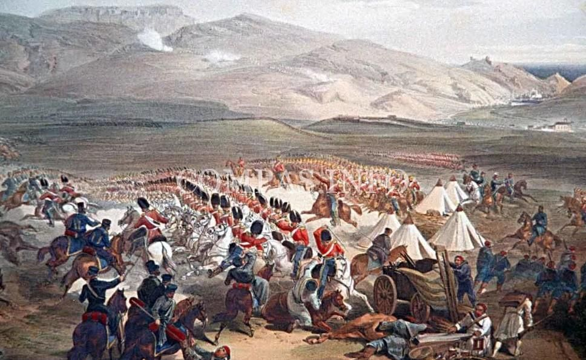
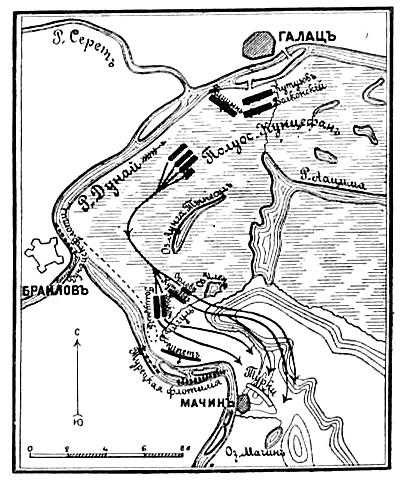
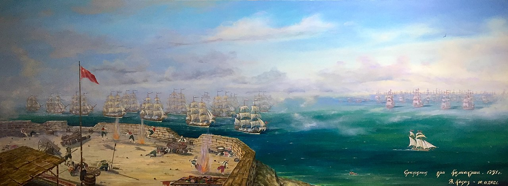
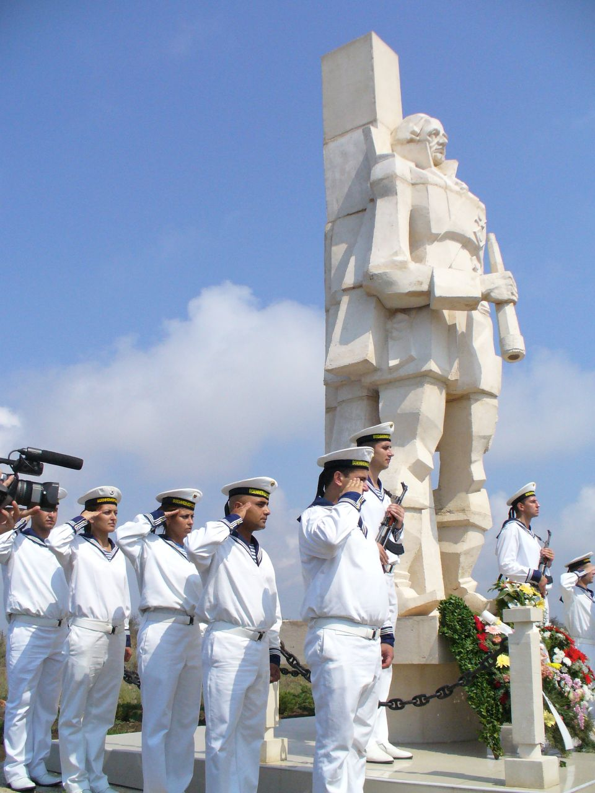
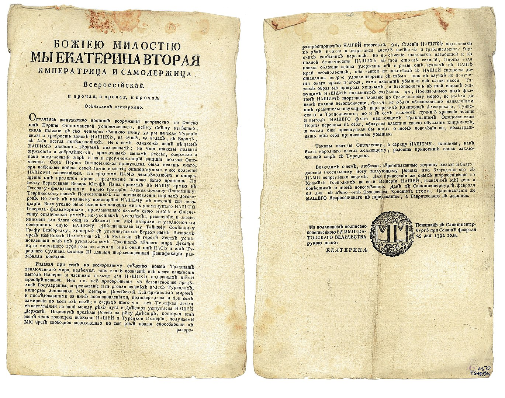
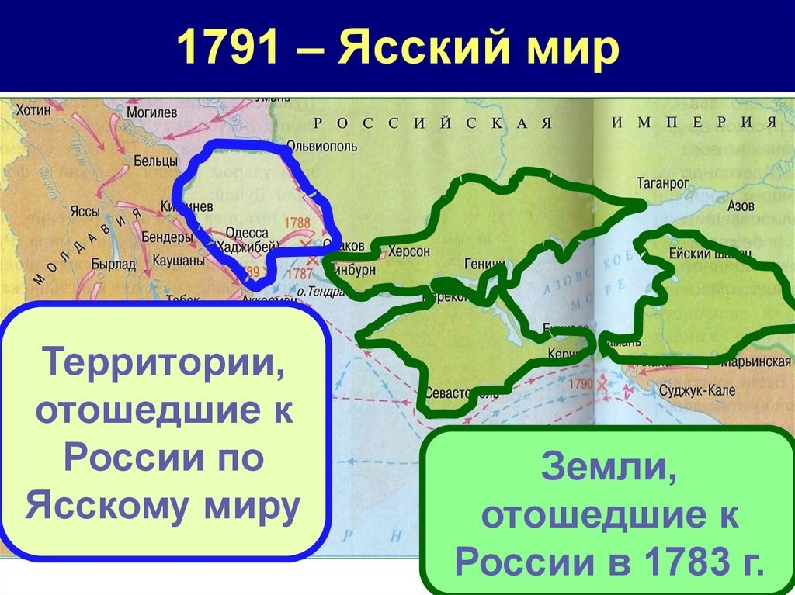

К лету 1791 года, русская армия под командованием князя Николая Репнина продолжала наступление на Дунайском театре военных действий. Турецкие войска, стремясь остановить продвижение русских, сосредоточили значительные силы в районе Мачина, заняв укреплённые позиции. Репнин, понимая стратегическую важность этого района, решил дать генеральное сражение, чтобы закрепить успехи русской армии и вынудить противника к миру. Обе стороны готовились к решительной битве, которая должна была определить ход дальнейших событий.


28 июня (9 июля по новому стилю) 1791 года началось Мачинское сражение. Русские войска, проявив высокий боевой дух и мастерство, атаковали турецкие позиции. В ходе ожесточенного боя, русская пехота и кавалерия нанесли тяжелые потери турецкой армии.
Турецкие войска не выдержали натиска и обратились в бегство. Победа при Мачине стала одним из ключевых событий кампании 1791 года, подорвав боевой дух турецкой армии и заставив Османскую империю пойти на мирные переговоры.
Сражение при Калиакрии


В 1791 году, после серии поражений на море, турецкий флот, усиленный алжирскими и триполийскими кораблями, стремился нанести контрудар русскому флоту в Черном море. Турецкая эскадра, направляясь к побережью Крыма, планировала высадить десант. Адмирал Фёдор Ушаков, командующий русским флотом, узнав о намерениях противника, вышел навстречу и занял позицию у мыса Калиакра, готовясь к решительному сражению.
31 июля 1791 года у мыса Калиакра произошло сражение. Ушаков, применив тактику стремительной атаки, разделил свой флот на две колонны, которые ударили по центру и авангарду турецкой эскадры. В ходе ожесточенного боя русские моряки проявили храбрость и профессионализм, нанеся турецкому флоту сокрушительное поражение. Турецкие корабли понесли серьезные повреждения и были вынуждены отступить. Победа при Калиакрии окончательно закрепила господство русского флота на Черном море и способствовала заключению Ясского мира.

Ясский мирный договор, завершивший русско-турецкую войну 1787-1791 годов, был подписан 9 января 1792 года (29 декабря 1791 года по старому стилю) в городе Яссы. Переговоры вели представители Российской империи во главе с князем А.А. Безбородко (после смерти Потёмкина) и Османской империи во главе с великим визирем Коджа Юсуф-пашой. Договор был подписан Самойловым, де Рибасом и Лашкаревым от России и Абдуллой эфенди, Ибрагимом Исметом беем и Мехмедом эфенди от Турции.
